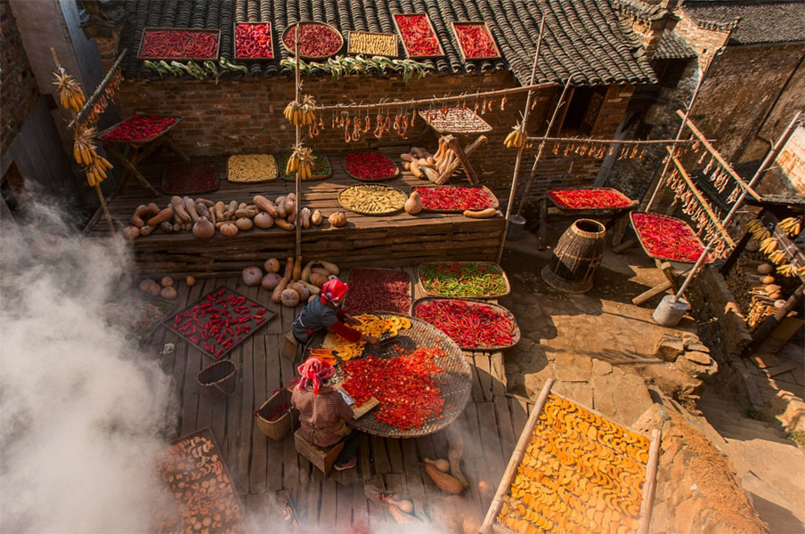
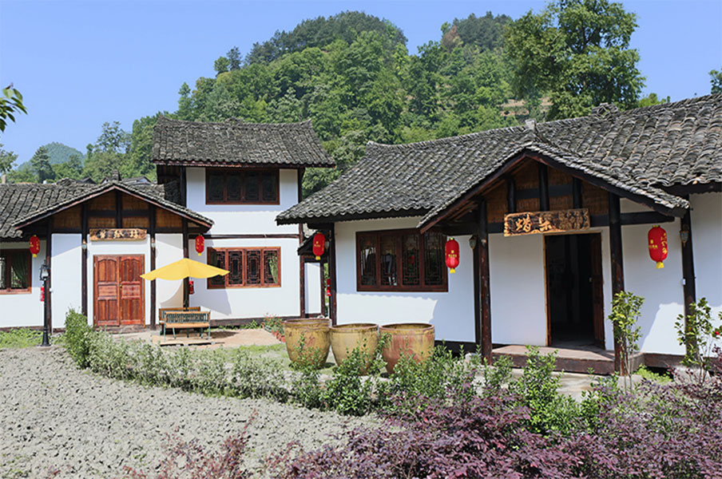

全域旅游时代到来 最好的去处是升级版乡村旅游
发布时间：2016-06-15 14:00:23 浏览次数：851次中国网6月15日讯 6月3日，由大地风景国际咨询集团与苏州市旅游局联合主办的苏州市度假旅游创新发展专题培训 班（第四期）成功举办，北京大地乡居旅游发展有限公司总经理李霞博士就“全域旅游时代的乡村旅游升级”展开一次 演讲，李霞指出，近两年，只要是涉及到乡村，涉及到乡村+旅游，或者乡村+一些其他的东西，比如说+艺术，+建设， 再跟旅游融合起来，社会关注度是非常高的，所以整个行业拥有非常大的发展机遇。同时处身一个大的背景，叫做全域 旅游时代的到来，在此背景下，怎么提升乡村旅游产品，怎么让乡村旅游的产业发展得更蓬勃。李霞从新的背景、新的 使命、新的模式和新的方法，以及案例和实践中分享经验。
李霞表示，乡村旅游面向的受众不同，研究的东西也不一样。最初讲到乡村旅游，大家说以农家乐为主体。在一些 地区，说要做乡村度假，很难摆脱做农家乐的概念，但是乡村旅游已经远远不止农家乐。
李霞注意到，乡村谈论旅游的时候，很多人会说不做农家乐，要做民宿。然后还有一些比如说美丽乡村建设，这个 不是旅游口的概念，但是它跟乡村旅游的关系非常密切。很多地方是因为先做了“美丽乡村建设”，建设完了发现变成 一个非常没有个性化的乡村，然后又觉得说乡村建设没有解决旅游产业的问题，是不是需要来构筑一些旅游的产品？
国家旅游局提出来，乡村旅游是旅游扶贫的一个非常重要的途径和手段，所以旅游扶贫也跟乡村旅游的发展有紧密 联系。现在农业每年都是作为中央一号文件被提出来。农业里面休闲农业以及农业的第三产业，在乡村提供旅游产品的 时候有很多关系，所以我们免不了会谈到休闲农业的发展和田园游乐的发展。另外一个，现在有很多人在重新下乡，小 资、文艺青年、旅游创客等等。他们变成乡村旅游发展的重要因子。